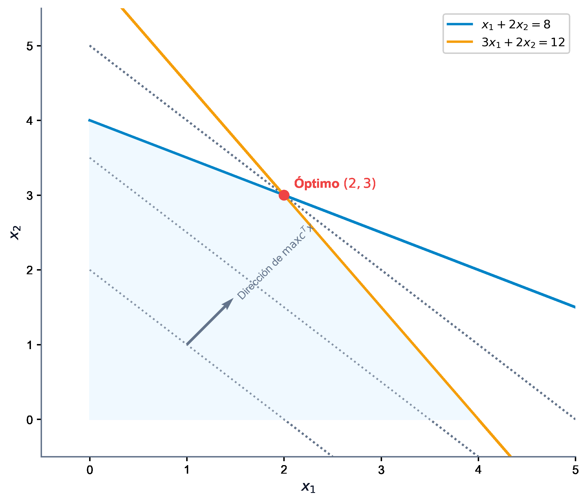

5 Aplicaciones de KKT: Programación Lineal y Cuadrática
Las condiciones de Karush-Kuhn-Tucker (KKT) adquieren una relevancia excepcional al aplicarse sobre problemas con estructuras matemáticas específicas, como la Programación Lineal (LP) y la Programación Cuadrática (QP). En ambos casos, las restricciones son afines, lo que garantiza que las cualificaciones de restricciones (como LICQ) se verifiquen de forma natural en cualquier punto factible. Además, cuando la función objetivo es convexa, las condiciones necesarias de KKT se convierten también en suficientes, proporcionando un marco algebraico cerrado para hallar y certificar el óptimo global.
En este capítulo, analizaremos la relación entre las condiciones KKT y la dualidad lineal, explicaremos la interpretación económica de las variables duales como precios sombra, clasificaremos los tipos de óptimos lineales, describiremos el método del Símplex de Wolfe para programación cuadrática y mostraremos su resolución práctica mediante CVXPY.
Al finalizar este capítulo, serás capaz de:
- Deducir y justificar la equivalencia entre los multiplicadores KKT de un problema de programación lineal y las variables óptimas de su problema dual asociado.
- Demostrar formalmente el teorema de dualidad débil en programación lineal.
- Interpretar económicamente las variables duales como precios sombra (shadow prices) de los recursos limitados.
- Clasificar los tipos de óptimos en programación lineal atendiendo a la unicidad, degeneración y acotación tanto del problema primal como del dual.
- Formular el sistema KKT para problemas de programación cuadrática (QP) en forma matricial.
- Aplicar el algoritmo del Símplex de Wolfe (regla de entrada restringida) para resolver de forma exacta problemas cuadráticos convexos.
- Implementar y resolver modelos LP y QP en Python empleando la librería de optimización convexa CVXPY.
5.1 Programación Lineal (LP)
La Programación Lineal consiste en optimizar una función lineal sujeta a restricciones lineales de igualdad y desigualdad. Su simplicidad estructural permite deducir propiedades de dualidad muy potentes, cuyas bases matemáticas e históricas se detallan exhaustivamente en los textos de programación matemática (Bazaraa, Jarvis, y Sherali 2011; Luenberger y Ye 2015).

5.1.1 Dualidad en Programación Lineal
Consideremos el par de problemas primal (P) y dual (D) en su forma canónica estándar:
- Problema Primal (P): \[ \begin{aligned} \min_{x} \quad & c^T x \\ \text{sujeto a} \quad & A x \ge b \\ & x \ge 0 \end{aligned} \]
- Problema Dual (D): \[ \begin{aligned} \max_{w} \quad & b^T w \\ \text{sujeto a} \quad & A^T w \le c \\ & w \ge 0 \end{aligned} \]
Para cualquier solución factible \(x\) del problema primal (P) y cualquier solución factible \(w\) del problema dual (D), el valor de la función objetivo dual es una cota inferior del valor de la función objetivo primal: \[ b^T w \le c^T x \]
Demostración: Dado que \(x\) es factible en (P), se cumple que \(A x \ge b\). Multiplicando por la izquierda por el vector dual no negativo \(w^T \ge 0\), preservamos el sentido de la desigualdad: \[ w^T A x \ge w^T b = b^T w \]
De forma análoga, dado que \(w\) es factible en (D), se tiene que \(A^T w \le c\), lo que equivale a \(w^T A \le c^T\). Multiplicando por la derecha por el vector primal no negativo \(x \ge 0\): \[ w^T A x \le c^T x \]
Combinando ambas desigualdades encadenadas, obtenemos: \[ b^T w \le w^T A x \le c^T x \implies b^T w \le c^T x. \quad \blacksquare \]
5.1.2 Condiciones KKT en Programación Lineal
Para aplicar el teorema de KKT, reescribimos el problema primal (P) en formato estándar de minimización con restricciones de tipo \(\le 0\): \[ \begin{aligned} \min_{x} \quad & c^T x \\ \text{sujeto a} \quad & b - A x \le 0 \\ & -x \le 0 \end{aligned} \]
Asociamos el vector de multiplicadores \(u \in \mathbb{R}^m\) (\(u \ge 0\)) a las restricciones de recursos (\(b - A x \le 0\)) y el vector \(v \in \mathbb{R}^n\) (\(v \ge 0\)) a las de no negatividad (\(-x \le 0\)). La función Lagrangiana es: \[ L(x, u, v) = c^T x + u^T (b - A x) - v^T x \]
Las condiciones de optimalidad de KKT para este problema son:
- Estacionariedad: \[ \nabla_x L(x, u, v) = c - A^T u - v = 0 \]
- Factibilidad Primal: \[ A x \ge b, \qquad x \ge 0 \]
- Factibilidad Dual: \[ u \ge 0, \qquad v \ge 0 \]
- Holgura Complementaria: \[ u_i (b_i - a_i^T x) = 0, \quad \forall i = 1, \dots, m \] \[ v_j x_j = 0, \quad \forall j = 1, \dots, n \]
De la ecuación de estacionariedad despejamos \(c = A^T u + v\). Multiplicando por \(x^T\) por la izquierda: \[ c^T x = u^T A x + v^T x \]
Aplicando las condiciones de holgura complementaria (\(v^T x = 0\) y \(u^T A x = u^T b\)): \[ c^T x = u^T b = b^T u \]
Esto demuestra que el vector de multiplicadores KKT \(u\) es factible en el problema dual (D) y proporciona exactamente el mismo valor objetivo que la solución primal \(x\). Por el teorema de dualidad fuerte, los multiplicadores KKT \(u\) del problema primal son idénticos a las variables óptimas \(w^*\) del problema dual.
5.1.3 Interpretación Económica: Precios Sombra
En el ámbito de la economía y la gestión de operaciones, los problemas de optimización lineal suelen representar la asignación de recursos limitados (como horas de mano de obra, materias primas o presupuesto) para maximizar un beneficio o minimizar un coste de producción. En este marco:
- Las variables primales \(x_j\) representan los niveles de actividad (las cantidades de cada producto a fabricar).
- Los límites \(b_i\) representan la disponibilidad disponible de cada recurso \(i\).
- Los multiplicadores duales \(u_i\) (o variables duales \(w_i\)) representan los precios sombra (shadow prices) de los recursos.
El precio sombra \(u_i\) mide la tasa de cambio del beneficio óptimo ante un incremento unitario en la disponibilidad del recurso \(b_i\): \[ u_i^* = \frac{\partial (c^T x^*)}{\partial b_i} \]
La condición de holgura complementaria \(u_i (b_i - a_i^T x^*) = 0\) posee entonces una interpretación económica intuitiva y elegante:
- Si al alcanzar el plan de producción óptimo sobra parte del recurso \(i\) (\(b_i - a_i^T x^* > 0\)), dicho recurso no es un factor limitante (es abundante). Por tanto, añadir más cantidad del mismo no aumentará el beneficio, lo que obliga a que su precio sombra sea cero (\(u_i^* = 0\)).
- Si un recurso posee un precio sombra estrictamente positivo (\(u_i^* > 0\)), significa que dicho recurso es valioso y está limitando la producción. En consecuencia, se consumirá por completo en el óptimo, dejando la holgura en cero (\(b_i - a_i^T x^* = 0\)).
5.1.4 Clasificación de Óptimos y Relaciones de Dualidad
Atendiendo a la geometría del espacio y la unicidad de las soluciones, se clasifican los siguientes escenarios recíprocos entre primal y dual (analizados sobre un espacio en \(\mathbb{R}^2\)):
- Caso 1: Solución Única y No Degenerada:
- Primal: Mínimo único situado en un vértice donde se cruzan exactamente \(n\) restricciones activas.
- Dual: Solución única y no degenerada. Los multiplicadores asociados a las restricciones activas del primal son estrictamente positivos (\(u_i > 0\)).
- Caso 2: Solución Única Degenerada:
- Primal: Mínimo situado en un vértice donde coinciden más de \(n\) restricciones activas (sobredeterminación). Los gradientes de estas restricciones son linealmente dependientes.
- Dual: El dual presenta múltiples soluciones óptimas alternas.
- Caso 3: Múltiples Soluciones No Degeneradas:
- Primal: La función de coste es paralela a una de las restricciones activas. El óptimo es el segmento que conecta dos vértices.
- Dual: La solución del dual es única, pero degenerada (presenta algún multiplicador nulo en las restricciones activas del primal).
- Caso 4: Múltiples Soluciones Degeneradas:
- Primal: El óptimo es una cara o segmento factible, pero alguno de los vértices extremos está sobredeterminado por restricciones activas redundantes.
- Dual: El dual presenta infinitas soluciones óptimas, muchas de ellas degeneradas.
- Caso 5: Primal No Acotado:
- Primal: El valor objetivo decrece indefinidamente hacia \(-\infty\) a lo largo de una dirección extrema de recesión factible. No existe punto KKT.
- Dual: El problema dual es no factible.
- Caso 6: Primal No Factible:
- Primal: La región factible es vacía (restricciones incompatibles).
- Dual: El dual es no factible, o posee solución no acotada.
5.2 Programación Cuadrática (QP)
La programación cuadrática optimiza una función objetivo cuadrática sujeta a un conjunto de restricciones lineales de igualdad o desigualdad:
\[ \begin{aligned} \min_{x} \quad & f(x) = c^T x + \frac{1}{2} x^T Q x \\ \text{sujeto a} \quad & A x \ge b \\ & x \ge 0 \end{aligned} \]
Para garantizar que el problema sea convexo (y que las condiciones KKT sean necesarias y suficientes para alcanzar el óptimo global), la matriz simétrica \(Q \in \mathbb{R}^{n \times n}\) debe ser semidefinida positiva (\(Q \succeq 0\)).
5.2.1 El Sistema KKT para QP en Forma Matricial
Asociando multiplicadores \(u \ge 0\) para las restricciones de recursos y \(v \ge 0\) para las de no negatividad, la Lagrangiana es: \[ L(x, u, v) = c^T x + \frac{1}{2} x^T Q x + u^T (b - A x) - v^T x \]
Derivando con respecto a \(x\) y planteando KKT, obtenemos: \[ \begin{aligned} A x - y &= b, \quad y \ge 0 \\ Q x + c - A^T u - v &= 0, \quad x \ge 0, \ v \ge 0 \\ u \ge 0, \ y &\ge 0 \\ u^T y = 0, \ v^T x &= 0 \end{aligned} \] donde \(y \ge 0\) es el vector de variables de holgura del primal.
Podemos agrupar la parte lineal de este sistema en forma de sistema matricial ampliado: \[ \begin{pmatrix} Q & -A^T & -I & 0 \\ A & 0 & 0 & -I \end{pmatrix} \begin{pmatrix} x \\ u \\ v \\ y \end{pmatrix} = \begin{pmatrix} -c \\ b \end{pmatrix} \] donde recordamos que además deben satisfacerse las restricciones de no negatividad para todas las variables y las condiciones lógicas de complementariedad (\(u^T y + v^T x = 0\)).
5.2.2 Linealización y Algoritmo del Símplex de Wolfe
El sistema KKT es lineal en todas sus partes excepto por la condición de complementariedad \(u^T y + v^T x = 0\). Philip Wolfe propuso en 1959 adaptar el algoritmo del Símplex lineal para resolver este sistema utilizando una técnica de entrada restringida (restricted entry rule):
- Se relaja temporalmente la complementariedad \(u^T y + v^T x = 0\).
- Se introducen variables artificiales no negativas \(z_j \ge 0\) en las ecuaciones de estacionariedad para obtener una solución básica inicial obvia.
- Se minimiza la suma de las variables artificiales \(\min \sum z_j\) usando las operaciones de pivote del Símplex, pero imponiendo una restricción en la elección de la variable que entra en la base:
- La variable dual \(u_i\) no puede entrar en la base si su holgura primal asociada \(y_i\) es actualmente una variable básica.
- La holgura dual \(v_j\) no puede entrar en la base si la variable primal correspondiente \(x_j\) es actualmente básica.
- Si el algoritmo finaliza con un coste óptimo de cero (todas las artificiales fuera de la base), el punto resultante satisface KKT y es el óptimo global del problema cuadrático.
5.3 Caso Práctico Detallado: Algoritmo de Wolfe
Consideremos el problema de minimizar la distancia euclídea al punto \((4, 4)\) en una región delimitada por tres restricciones lineales: \[ \begin{aligned} \min \quad & (x_1 - 4)^2 + (x_2 - 4)^2 \equiv \frac{1}{2} x^T \begin{pmatrix} 2 & 0 \\ 0 & 2 \end{pmatrix} x + \begin{pmatrix} -8 \\ -8 \end{pmatrix}^T x + 32 \\ \text{sujeto a} \quad & x_1 + x_2 \le 4 \\ & -x_1 + x_2 \le 2 \\ & 2x_1 + x_2 \le 7 \\ & x_1, x_2 \ge 0 \end{aligned} \]
Formulamos el sistema lineal de Wolfe agregando variables primales de holgura \(y_i\), multiplicadores duales \(u_i\), holguras duales \(v_j\) y variables artificiales \(z_j\):
- Ecuaciones primales:
- \(x_1 + x_2 + y_1 = 4\)
- \(-x_1 + x_2 + y_2 = 2\)
- \(2x_1 + x_2 + y_3 = 7\)
- Ecuaciones de estacionariedad (evaluando \(Q x + c - A^T u - v + z = 0\)):
- \(2x_1 - 8 + u_1 - u_2 + 2u_3 - v_1 + z_1 = 0 \implies 2x_1 + u_1 - u_2 + 2u_3 - v_1 + z_1 = 8\)
- \(2x_2 - 8 + u_1 + u_2 + u_3 - v_2 + z_2 = 0 \implies 2x_2 + u_1 + u_2 + u_3 - v_2 + z_2 = 8\)
5.3.1 Progresión de las Tablas del Símplex de Wolfe
5.3.1.1 Tabla Inicial (Iteración 1)
- Base: \(\{y_1, y_2, y_3, z_1, z_2\}\)
- Valor del Objetivo: \(16\) (Suma de artificiales \(z_1 + z_2 = 8 + 8 = 16\))
| Base | Sol. | \(x_1\) | \(x_2\) | \(y_1\) | \(y_2\) | \(y_3\) | \(u_1\) | \(u_2\) | \(u_3\) | \(v_1\) | \(v_2\) | \(z_1\) | \(z_2\) |
|---|---|---|---|---|---|---|---|---|---|---|---|---|---|
| \(y_1\) | \(4\) | \(1\) | \(1\) | \(1\) | \(0\) | \(0\) | \(0\) | \(0\) | \(0\) | \(0\) | \(0\) | \(0\) | \(0\) |
| \(y_2\) | \(2\) | \(-1\) | \(1\) | \(0\) | \(1\) | \(0\) | \(0\) | \(0\) | \(0\) | \(0\) | \(0\) | \(0\) | \(0\) |
| \(y_3\) | \(7\) | \(2\) | \(1\) | \(0\) | \(0\) | \(1\) | \(0\) | \(0\) | \(0\) | \(0\) | \(0\) | \(0\) | \(0\) |
| \(z_1\) | \(8\) | \(2\) | \(0\) | \(0\) | \(0\) | \(0\) | \(1\) | \(-1\) | \(2\) | \(-1\) | \(0\) | \(1\) | \(0\) |
| \(z_2\) | \(8\) | \(0\) | \(2\) | \(0\) | \(0\) | \(0\) | \(1\) | \(1\) | \(1\) | \(0\) | \(-1\) | \(0\) | \(1\) |
| Coste | \(16\) | \(-2\) | \(-2\) | \(0\) | \(0\) | \(0\) | \(-2\) | \(0\) | \(-3\) | \(1\) | \(1\) | \(0\) | \(0\) |
Análisis: Los costes reducidos más negativos corresponden a las variables \(x_1, x_2, u_1, u_3\). Por la regla de entrada restringida, no podemos introducir \(u_1\) ni \(u_3\) porque sus holguras asociadas \(y_1, y_3\) se encuentran actualmente en la base (son básicas). Por tanto, seleccionamos \(x_2\) para entrar en la base. Aplicando el criterio de la razón mínima, la variable saliente es \(y_2\) (pivote \(= 1\)).
5.3.1.2 Tabla 2 (Iteración 2)
- Base: \(\{y_1, x_2, y_3, z_1, z_2\}\)
- Valor del Objetivo: \(12\)
| Base | Sol. | \(x_1\) | \(x_2\) | \(y_1\) | \(y_2\) | \(y_3\) | \(u_1\) | \(u_2\) | \(u_3\) | \(v_1\) | \(v_2\) | \(z_1\) | \(z_2\) |
|---|---|---|---|---|---|---|---|---|---|---|---|---|---|
| \(y_1\) | \(2\) | \(2\) | \(0\) | \(1\) | \(-1\) | \(0\) | \(0\) | \(0\) | \(0\) | \(0\) | \(0\) | \(0\) | \(0\) |
| \(x_2\) | \(2\) | \(-1\) | \(1\) | \(0\) | \(1\) | \(0\) | \(0\) | \(0\) | \(0\) | \(0\) | \(0\) | \(0\) | \(0\) |
| \(y_3\) | \(5\) | \(3\) | \(0\) | \(-1\) | \(-1\) | \(1\) | \(0\) | \(0\) | \(0\) | \(0\) | \(0\) | \(0\) | \(0\) |
| \(z_1\) | \(8\) | \(2\) | \(0\) | \(0\) | \(0\) | \(0\) | \(1\) | \(-1\) | \(2\) | \(-1\) | \(0\) | \(1\) | \(0\) |
| \(z_2\) | \(4\) | \(2\) | \(0\) | \(0\) | \(-2\) | \(0\) | \(1\) | \(1\) | \(1\) | \(0\) | \(-1\) | \(0\) | \(1\) |
| Coste | \(12\) | \(-4\) | \(0\) | \(0\) | \(2\) | \(0\) | \(-2\) | \(0\) | \(-3\) | \(1\) | \(1\) | \(0\) | \(0\) |
Análisis: \(u_1, u_3\) siguen bloqueados por \(y_1, y_3\). Seleccionamos \(x_1\) para entrar en la base. El criterio de la razón mínima determina que sale \(y_1\) (pivote \(= 2\)).
5.3.1.3 Tabla 3 (Iteración 3)
- Base: \(\{x_1, x_2, y_3, z_1, z_2\}\)
- Valor del Objetivo: \(8\)
| Base | Sol. | \(x_1\) | \(x_2\) | \(y_1\) | \(y_2\) | \(y_3\) | \(u_1\) | \(u_2\) | \(u_3\) | \(v_1\) | \(v_2\) | \(z_1\) | \(z_2\) |
|---|---|---|---|---|---|---|---|---|---|---|---|---|---|
| \(x_1\) | \(1\) | \(1\) | \(0\) | \(1/2\) | \(-1/2\) | \(0\) | \(0\) | \(0\) | \(0\) | \(0\) | \(0\) | \(0\) | \(0\) |
| \(x_2\) | \(3\) | \(0\) | \(1\) | \(1/2\) | \(1/2\) | \(0\) | \(0\) | \(0\) | \(0\) | \(0\) | \(0\) | \(0\) | \(0\) |
| \(y_3\) | \(2\) | \(0\) | \(0\) | \(-5/2\) | \(1/2\) | \(1\) | \(0\) | \(0\) | \(0\) | \(0\) | \(0\) | \(0\) | \(0\) |
| \(z_1\) | \(6\) | \(0\) | \(0\) | \(-1\) | \(1\) | \(0\) | \(1\) | \(-1\) | \(2\) | \(-1\) | \(0\) | \(1\) | \(0\) |
| \(z_2\) | \(2\) | \(0\) | \(0\) | \(-1\) | \(-1\) | \(0\) | \(1\) | \(1\) | \(1\) | \(0\) | \(-1\) | \(0\) | \(1\) |
| Coste | \(8\) | \(0\) | \(0\) | \(2\) | \(0\) | \(0\) | \(-2\) | \(0\) | \(-3\) | \(1\) | \(1\) | \(0\) | \(0\) |
Análisis: Como \(y_1\) ha salido de la base (\(y_1 = 0\)), se desbloquea la entrada de \(u_1\). Entra \(u_1\) y sale \(z_2\) (pivote \(= 1\)).
5.3.1.4 Tabla 4 (Iteración 4)
- Base: \(\{x_1, x_2, y_3, z_1, u_1\}\)
- Valor del Objetivo: \(4\)
| Base | Sol. | \(x_1\) | \(x_2\) | \(y_1\) | \(y_2\) | \(y_3\) | \(u_1\) | \(u_2\) | \(u_3\) | \(v_1\) | \(v_2\) | \(z_1\) | \(z_2\) |
|---|---|---|---|---|---|---|---|---|---|---|---|---|---|
| \(x_1\) | \(1\) | \(1\) | \(0\) | \(1/2\) | \(-1/2\) | \(0\) | \(0\) | \(0\) | \(0\) | \(0\) | \(0\) | \(0\) | \(0\) |
| \(x_2\) | \(3\) | \(0\) | \(1\) | \(1/2\) | \(1/2\) | \(0\) | \(0\) | \(0\) | \(0\) | \(0\) | \(0\) | \(0\) | \(0\) |
| \(y_3\) | \(2\) | \(0\) | \(0\) | \(-5/2\) | \(1/2\) | \(1\) | \(0\) | \(0\) | \(0\) | \(0\) | \(0\) | \(0\) | \(0\) |
| \(z_1\) | \(4\) | \(0\) | \(0\) | \(0\) | \(2\) | \(0\) | \(0\) | \(-2\) | \(1\) | \(-1\) | \(1\) | \(1\) | \(-1\) |
| \(u_1\) | \(2\) | \(0\) | \(0\) | \(-1\) | \(-1\) | \(0\) | \(1\) | \(1\) | \(1\) | \(0\) | \(-1\) | \(0\) | \(1\) |
| Coste | \(4\) | \(0\) | \(0\) | \(0\) | \(-2\) | \(0\) | \(0\) | \(2\) | \(-1\) | \(1\) | \(-1\) | \(0\) | \(2\) |
Análisis: \(u_3, v_2\) siguen bloqueados por \(y_3, x_2\). La única variable viable con coste reducido negativo es la holgura primal \(y_2\). Entra \(y_2\) y sale \(z_1\) (pivote \(= 2\)).
5.3.1.5 Tabla Final (Iteración 5)
- Base: \(\{x_1, x_2, y_3, y_2, u_1\}\)
- Valor del Objetivo: \(0\)
| Base | Sol. | \(x_1\) | \(x_2\) | \(y_1\) | \(y_2\) | \(y_3\) | \(u_1\) | \(u_2\) | \(u_3\) | \(v_1\) | \(v_2\) | \(z_1\) | \(z_2\) |
|---|---|---|---|---|---|---|---|---|---|---|---|---|---|
| \(x_1\) | \(2\) | \(1\) | \(0\) | \(1/2\) | \(0\) | \(0\) | \(0\) | \(-1/2\) | \(1/4\) | \(-1/4\) | \(1/4\) | \(1/4\) | \(-1/4\) |
| \(x_2\) | \(2\) | \(0\) | \(1\) | \(1/2\) | \(0\) | \(0\) | \(0\) | \(1/2\) | \(-1/4\) | \(1/4\) | \(-1/4\) | \(-1/4\) | \(1/4\) |
| \(y_3\) | \(1\) | \(0\) | \(0\) | \(-5/2\) | \(0\) | \(1\) | \(0\) | \(1/2\) | \(-1/4\) | \(1/4\) | \(-1/4\) | \(-1/4\) | \(1/4\) |
| \(y_2\) | \(2\) | \(0\) | \(0\) | \(0\) | \(1\) | \(0\) | \(0\) | \(-1\) | \(1/2\) | \(-1/2\) | \(1/2\) | \(1/2\) | \(-1/2\) |
| \(u_1\) | \(4\) | \(0\) | \(0\) | \(-1\) | \(0\) | \(0\) | \(1\) | \(0\) | \(3/2\) | \(-1/2\) | \(-1/2\) | \(1/2\) | \(1/2\) |
| Coste | \(0\) | \(0\) | \(0\) | \(0\) | \(0\) | \(0\) | \(0\) | \(0\) | \(0\) | \(0\) | \(0\) | \(1\) | \(1\) |
El coste del objetivo es cero, lo que significa que todas las variables artificiales han salido de la base. Hemos hallado la solución óptima: \[ x_1^* = 2, \qquad x_2^* = 2 \]
Con multiplicador activo \(u_1 = 4\). El valor mínimo de la distancia al cuadrado es \(f(2, 2) = (2-4)^2 + (2-4)^2 = 8\).
La progresión de las tablas del Símplex de Wolfe dibuja una trayectoria sobre la frontera del politopo factible en el plano \(\mathbb{R}^2\):
- Iteración 1: Comienza en el origen \((0,0)\).
- Iteración 2: La variable \(x_2\) entra en la base, desplazándose sobre el eje de ordenadas hasta el vértice \((0, 2)\), donde se activa la restricción \(g_2(x) \le 0\) (\(y_2 = 0\)).
- Iteración 3: La variable \(x_1\) entra en la base. El algoritmo avanza por la frontera de la restricción \(-x_1 + x_2 \le 2\) hasta el vértice \((1, 3)\). En este punto se alcanza la intersección con la restricción \(x_1 + x_2 \le 4\), por lo que \(y_1\) sale de la base.
- Iteración 4: Al salir \(y_1\) de la base, se permite la entrada del multiplicador dual \(u_1\) (\(u_1 = 2\)). El punto físico permanece en \((1, 3)\) mientras se realiza el ajuste de las tensiones duales.
- Iteración 5: Entra la holgura primal \(y_2\) (desactivando la restricción \(g_2(x) \le 0\)). El punto se desliza a lo largo del segmento definido por la restricción activa \(x_1 + x_2 = 4\) hasta alcanzar el punto más cercano al objetivo \((4, 4)\), que se sitúa en \((2, 2)\), con un multiplicador final de \(u_1 = 4\).
5.4 Formulación en Python con CVXPY
El siguiente script resuelve en Python el problema de programación lineal con restricciones de tipo elipse: \[ \min \{ 3x - y \mid x^2 + y^2 \le 1, \ 4x + y \ge 1 \} \]
import cvxpy as cp
# 1. Definir variables de decision
x = cp.Variable()
y = cp.Variable()
# 2. Definir funcion objetivo
objetivo = cp.Minimize(3 * x - y)
# 3. Definir restricciones
restricciones = [
cp.square(x) + cp.square(y) <= 1,
4 * x + y >= 1
]
# 4. Formular y resolver el problema
problema = cp.Problem(objetivo, restricciones)
problema.solve()
print(f"Estado del problema: {problema.status}")
print(f"Solucion optima: x = {x.value:.4f}, y = {y.value:.4f}")
print(f"Valor optimo de la funcion: {problema.value:.4f}")Resolvemos el problema cuadrático resuelto paso a paso por el método de Wolfe para verificar la solución:
import cvxpy as cp
import numpy as np
# 1. Definir vector de variables de decision
x = cp.Variable(2)
# 2. Definir matrices del problema cuadratico
# f(x) = 1/2 * x^T * P * x + q^T * x + 32
P = np.array([[2.0, 0.0], [0.0, 2.0]])
q = np.array([-8.0, -8.0])
objetivo = cp.Minimize(0.5 * cp.quad_form(x, P) + q.T @ x + 32.0)
# 3. Definir restricciones lineales
restricciones = [
x[0] + x[1] <= 4,
-x[0] + x[1] <= 2,
2 * x[0] + x[1] <= 7,
x[0] >= 0,
x[1] >= 0
]
# 4. Resolver
problema = cp.Problem(objetivo, restricciones)
problema.solve()
print(f"Estado del problema: {problema.status}")
print(f"Solucion optima: x1 = {x.value[0]:.4f}, x2 = {x.value[1]:.4f}")
print(f"Valor minimo obtenido: {problema.value:.4f}")